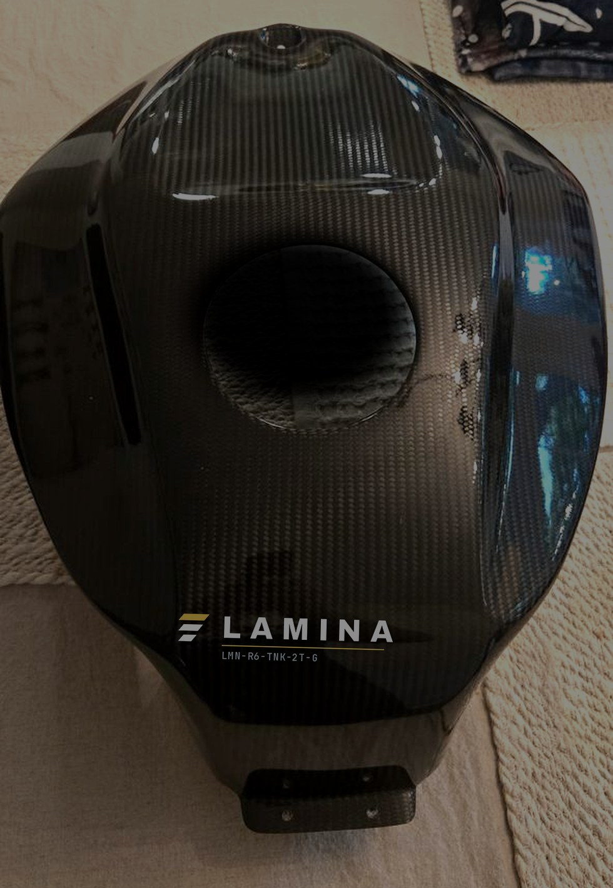
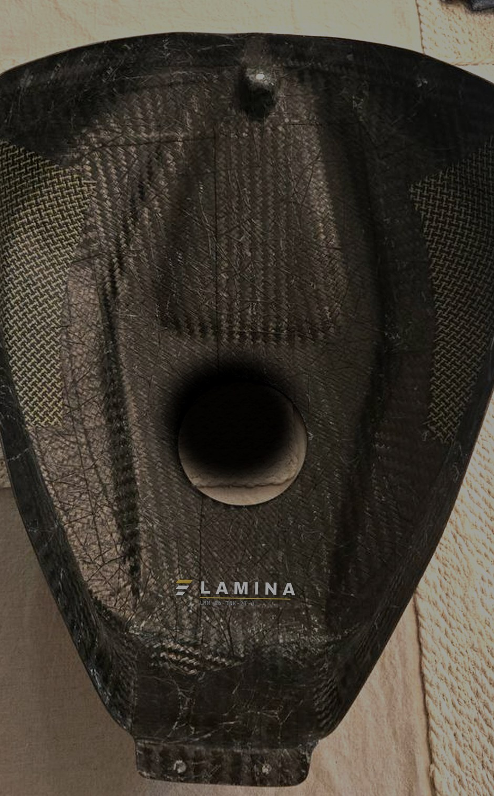

Your cover.
Every angle.
A three-dimensional study built around your photographs.
Turn it over. Look through the opening. Explore the shell.

Loading your shell… Drag to turn · pinch or scroll to zoomThe photographs behind the form.
Two views, one physical part. Visible edges guide this reconstruction; unseen geometry remains an estimate.
